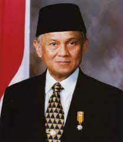

Header

presiden jokowi adalah presiden yang sekarang memimpin indonesia dalam 2 priode pemilihan..namun bulan" ini jokowi sudah mau selesai jabatan sebagai presiden
Soekarno adalah salah satu tokoh terpenting dalam sejarah Indonesia. Soekarno lahir pada 6 Juni 1901 di Surabaya, Jawa Timur, dan wafat pada tanggal 21 Juni 1970 di Jakarta. Soekarno memiliki peran penting dalam kemerdekaan Indonesia yaitu sebagai proklamator kemerdekaan Indonesia dan presiden pertama Indonesia.

presiden bj habibie adalah presiden ke 3 di indonseia, ia meninggal 11 september 2019 jakarta
Footer